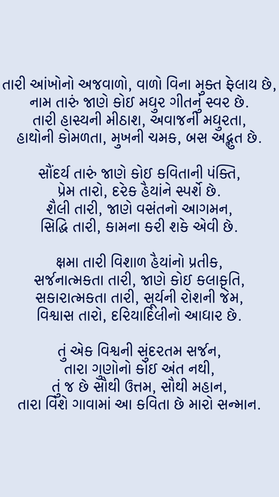

This story begins three years ago and holds a special place in my heart. There are aspects of my life I might forget, but this tale is not one of them. It encompasses five chapters that detail a journey from our first encounter to a bitter and unexpected end—a fate I hope to avoid. Let's embark on this journey, starting from the beginning.
It was perhaps May 10th when I first saw her in this life. The moment I laid eyes on her, my heart exclaimed,
"Ufff!" But then I reasoned, perhaps it was because she was a girl. I told myself it was just an attraction,
nothing more.
I vividly remember every detail of that day when our teacher introduced her to all the students. I couldn't take
my eyes off her, though I knew she didn't glance my way even once. I remember what she wore—a black T-shirt
adorned with white flowers, which looked stunning on her.
As days passed, she began to open up with everyone. Our group became a comfortable space where we could roast each
other without any reservations. I fondly recall those English tuition days filled with fun, her funny snaps with
filters, and the roast video where we all roasted her. These memories are so vivid, they are unforgettable.
This is how we became friends, among many other stories. But this is just a summarized version because I don’t
want to waste anyone's time. Maybe, I'll show the full book to my children someday, complete with images.
The story progresses as we joined tuitions for Physics and Chemistry. We sat next to each other—well, not too
close. I remember the professor solving problems on paper. It was curious how she always brought her school bag
but never seemed to have paper in it. I gave her my solved paper, and I still keep it to this day.
On that paper, she drew a stick man at the top, complete with a hairstyle on the figure's head. It was simple but
expressive. I still keep that paper with the stick man she drew.
This is just a sub-chapter of Chapter 1, which contains 10 such parts. If I showed everything here, what would I
read alone?
The story moves to August when our 12th board exams were cancelled, and we were given mass promotions. A few days
later, we were talking on Snapchat— I don't remember the topic of the conversation. But that night, under some
influence, I confessed my feelings to her. As you might guess from the title, her response was exactly what you'd
expect.
What followed is something every man experiences. When the first girl you are ready to do anything for rejects
you, it hurts. Despite that, I admired one thing about her: even though I wasn’t speaking to her, she always
messaged me. However, after that, we never spoke... until we met again in 2022 at a garba event, a year later.
When we met, she came up to talk. I felt awkward and guilty. I kept asking myself, "Why did I confess to her?" It
remains my biggest regret.
As seen in the previous chapter, we never spoke again—yes, never.
Whenever she tried to speak to me, I couldn't respond. Even today, I might lack the courage to talk to her
face-to-face. During these two years, I tried various ways to forget her and stay away. That's why I blocked her,
unfriended her, and removed her from everywhere. Yet, she never left my mind.
I'm not sure what would have happened if I knew everything from the start. However, I wrote something about her
attributes that I love the most, in Gujarati, which I'd like to share here:

Her eyes might be the most beautiful in the world. When she unties her hair, it's breathtaking. Her name is like a
sweet melody to me. Her personality can charm anyone. Her smile brightens even my worst days. Her voice is like
sweet music to my ears.
Her hands are so soft and delicate; I yearn to hold them. Her face is the most beautiful in the world to me. Her
beauty only intensifies with time. Her love is boundless and pure. Her style reflects modern fashion. Her
perfection is evident in everything she does.
Her forgiveness is easily granted. Her creativity is visible in everything she undertakes. Her positivity makes
every challenge seem manageable. And most importantly, her trust is possibly the best in the world.
The world doesn't always work as we wish, especially when it comes to things we love the most. The irony is that
what we love the most often stays the farthest from us. She says I will find someone better than her, but how can
I explain that even if I do, it would be pointless? If my heart holds no feelings for that new person, how could I
possibly be fair to them? That's a question I still haven't found an answer to.
Someday, I'll have to move on. When? Who knows... it's been almost four years, and I still don't know when it will
happen.
For now, I still like her a lot. If anything changes in the future, assume the story's ending has changed too.
So far, I haven't even thought about how this story might end. Whatever it is, it might not be worth watching.